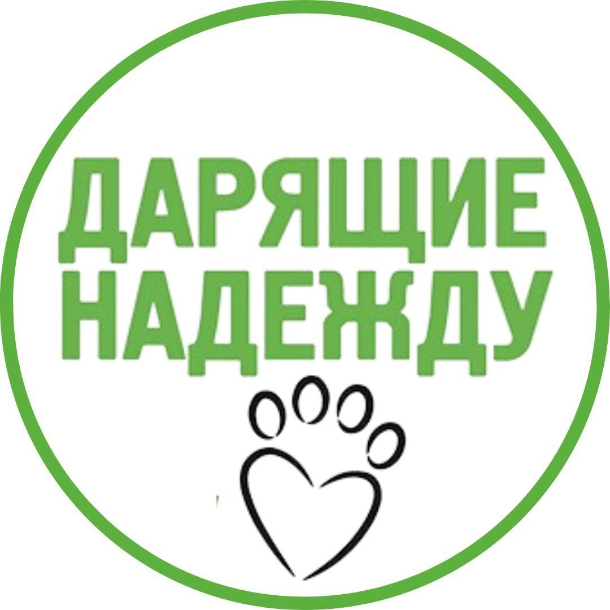

Дарящие Надежду
Благотворительный фонд помощи бездомным животным
🌿 Маленький тест
для больших сердец ❤️
❤️
Проверьте, как хорошо вы знаете мир бездомных животных. Каждый правильный ответ — маленький шаг к большой помощи!
❤️
👋
Добро пожаловать!
❤️
Мы рады, что вы здесь! Этот тест поможет вам узнать больше о бездомных животных и о том, как каждый из нас может им помочь.
❤️
📋 Правила викторины
📝
Всего
52 вопроса
🟢
3 раунда:
Лёгкий
,
Средний
,
Сложный
⭐
+
Бонусный раунд
о фонде «Дарящие Надежду»
✅
За каждый правильный ответ —
1 балл
🏆
В конце —
результат
и напутствие
🚀 Начать викторину
Вопрос 1 / 52
⭐ Баллы:
0
Лёгкий
РАУНД 1 · ЛЁГКИЙ
Загрузка вопроса...
◀ Назад
Далее ▶
🏁
0
из 52 баллов
Вы — настоящий друг животных!
🔄 Пройти снова